¡VIVA UNA EXPERIENCIA ASTRONÓMICA!
Adquiera su pedazo del cosmos y viva fuera de este mundo
¿Alguna vez te imaginaste siendo dueño de un pedazo de otro planeta?
Con nuestra oferta de terrenos interplanetarios, ahora puedes hacerlo.
Olvídate de los problemas cotidianos de la Tierra, como las reuniones de condominio o los impuestos desorbitados.
Aquí, los vecinos son muy tranquilos (casi no hay vida, ¡y la gravedad es opcional!).
Ya sea en la luna de Júpiter o en un rincón helado de Titán, tu nuevo hogar estará tan lejos de la rutina
que ni el estrés podrá alcanzarte. Y lo mejor de todo: ¡el cielo será el límite, pero el Wi-Fi no lo será!
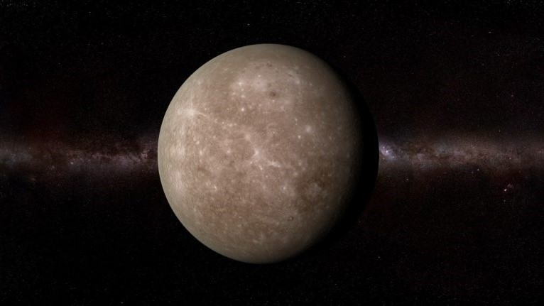
Mercurio
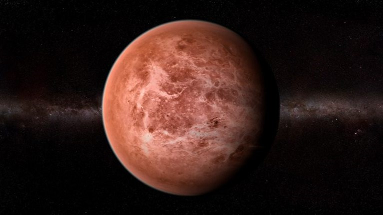
Venus
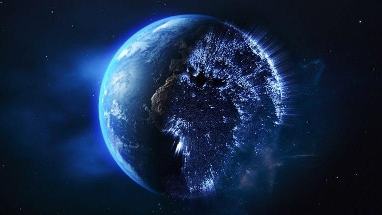
Planeta Tierra
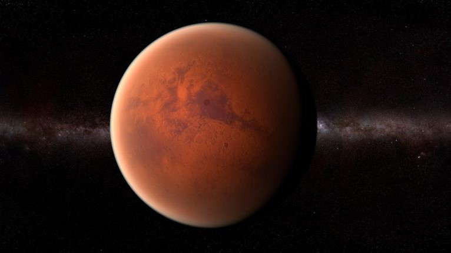
Marte
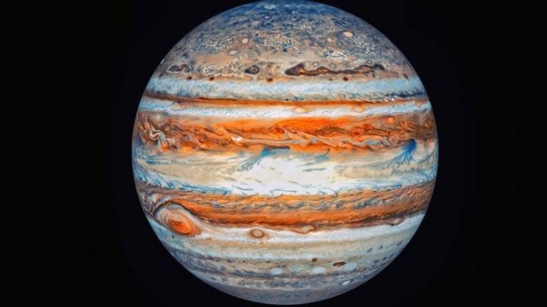
Júpiter
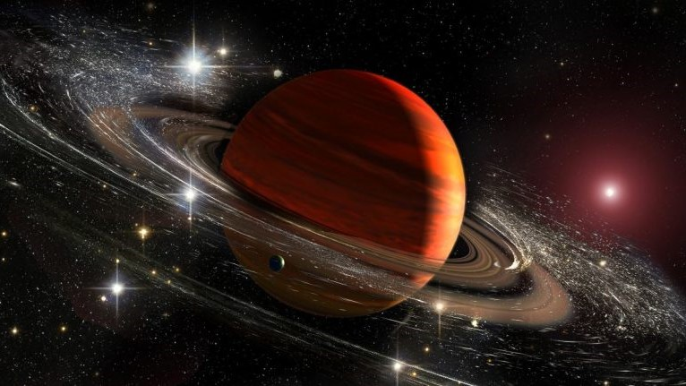
Saturno
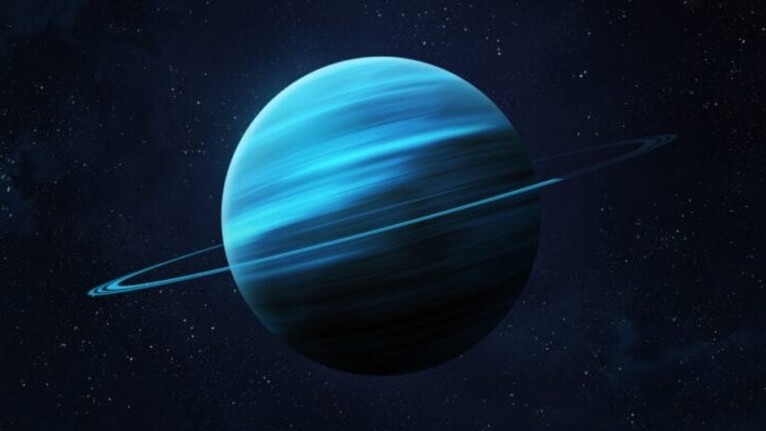
Urano
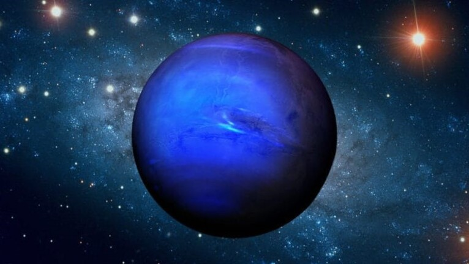
Neptuno
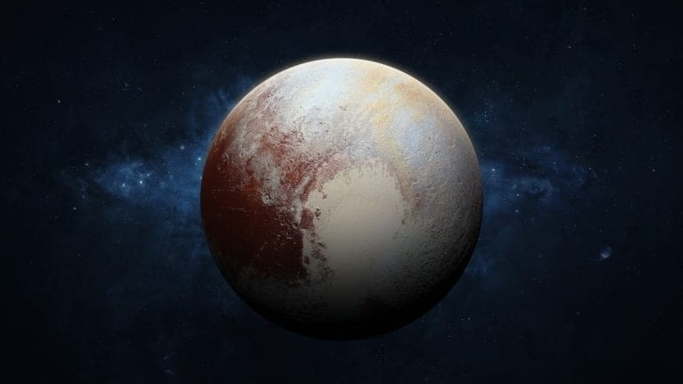
Plutón
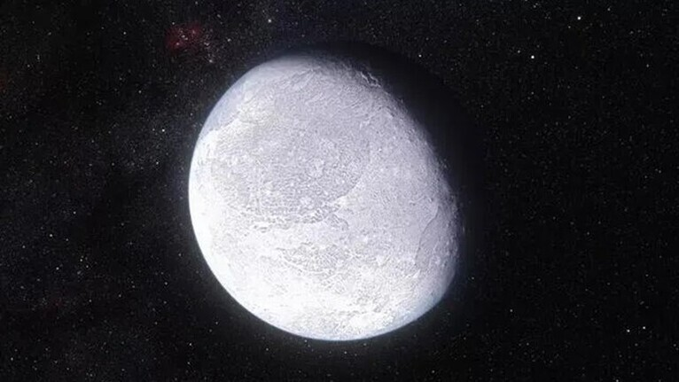
Eris
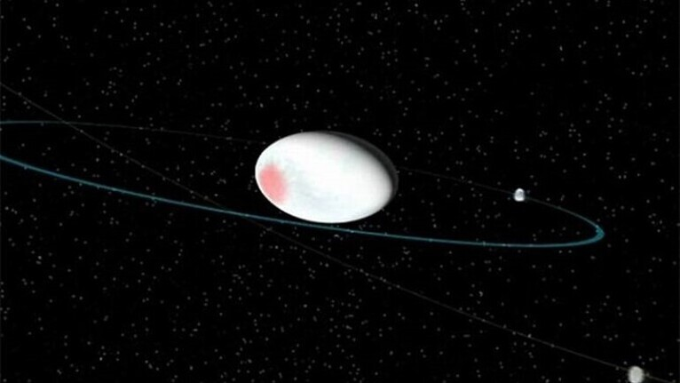
Haumea
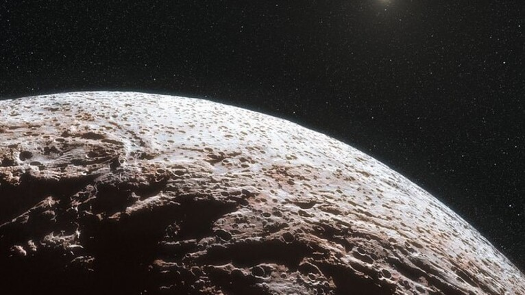
Makemake
Reseñas de nuestros compradores interplanetarios
"Compré un terreno en Titán y no puedo esperar para construir mi casa futurista. ¡Recomiendo esta inversión galáctica!"
- Jane Cosmos
“El equipo fue muy profesional y me ayudaron a elegir el mejor lote en Europa, la luna de Júpiter. ¡Me siento dueño de un pequeño rincón del universo!”
- Bonifacio Comettrail
“Al principio no estaba seguro de comprar un terreno en Titán, pero el proceso fue tan fácil y el servicio tan estelar que no pude resistirme.”
- Bonifacio Starbound
>“Vivir en Europa es un sueño hecho realidad. La superficie helada es perfecta para mi laboratorio subterráneo.”
- Arquímedes Nebula
"El servicio es tan rápido que sentí que me atendieron a la velocidad de la luz. ¡Totalmente recomendable!"
- Domingo Starhopper
"Gracias a su asesoría, pude elegir el lote perfecto en Ganimedes. Ahora tengo vistas inigualables de Júpiter y los anillos de Saturno."
- Orión Galaxias
“Compré un terreno en Plutón y, aunque dicen que es un planeta enano, ¡mi lote se siente gigante!”
- Eusebio Stardust
“La atención al cliente fue tan excelente que sentí que estaba hablando con un astronauta de verdad. ¡No podría estar más contento con mi compra en Venus!"
- Valentina Moonwalker
“Compré un lote en el Cinturón de Asteroides. ¡Perfecto para quienes buscan algo realmente exclusivo y fuera de lo común!”
- Rigoberto Meteor
“Mi experiencia comprando un lote en Tritón fue tan suave como flotar en el espacio. ¡Excelente servicio!”
- Galileo Skywalker
“El equipo me ayudó a personalizar mi lote en Urano. Ahora tengo una vista perfecta de los anillos desde mi futuro balcón.”
- Estrella Lunar
“Saturno es mucho más impresionante en persona, y tener un lote allí es un sueño hecho realidad. ¡Gracias por hacerlo posible!”
- Octavio Orbit
“Nunca imaginé que comprar un terreno en el espacio fuera tan fácil y seguro. Me encantó la transparencia del proceso."
- Selena Starlight
“El lote en Calisto es perfecto para construir mi casa vacacional espacial. ¡No puedo esperar para mudarme!”
- Apolo Sunbeam
“Adquirí un lote en Encélado y no me arrepiento. ¡Es como tener un pedazo de hielo cósmico para mí solo!”
- Hipólito Asteroid
“¡El servicio es tan brillante como una supernova! Me ayudaron en cada paso para asegurarme de elegir el mejor lote en Ceres.
- Andrómeda Nebulosa
“Compré un terreno en Vesta y me siento como un pionero explorando nuevos mundos. ¡Gracias por hacer de esta aventura algo tan accesible!”
- Teófilo Interstellar
“No puedo describir la emoción de tener un lote en la Luna. ¡Es el regalo perfecto para cualquier amante del espacio!”
- Diana Lunar
“Todo el proceso fue tan rápido y eficiente que casi sentí que estaba viajando en una nave espacial. ¡Gran servicio!”
- Sócrates Voyager
“El lote en Jápeto tiene una vista espectacular de los anillos de Saturno. ¡Definitivamente es el lugar perfecto para un observatorio persona
- Eneas Frostmoon
“El lote en Jápeto tiene una vista espectacular de los anillos de Saturno. ¡Definitivamente es el lugar perfecto para un observatorio personal!”
- Bonifacio Eclipse